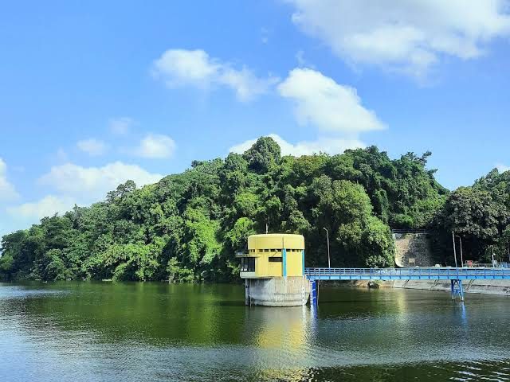
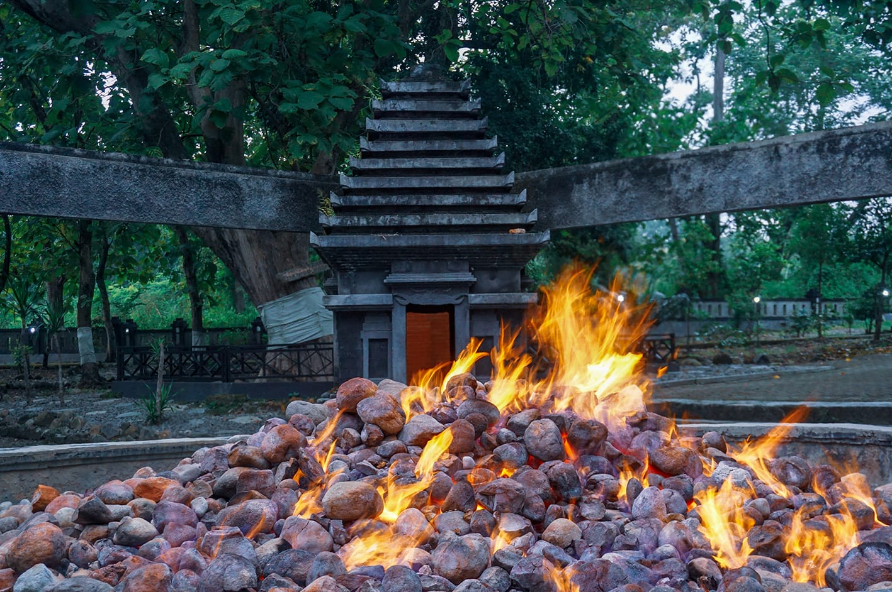

Gofun
GoFun Bojonegoro adalah sebuah kompleks hiburan keluarga terpadu dan terbesar yang berlokasi di Jalan Veteran, Sukorejo, Bojonegoro, Jawa Timur. Destinasi rekreasi ini menawarkan berbagai macam aktivitas yang dirancang untuk segala usia, menjadikannya tempat ideal untuk menghabiskan waktu libur bersama keluarga. Kompleks ini dibagi menjadi beberapa zona utama, termasuk GoFun Themepark yang menyajikan beragam wahana darat yang mendebarkan, serta Waterpark (Hutan Air Gofun) yang memiliki kolam renang dan wahana air, termasuk seluncuran Rainbow Slide yang populer. Selain wahana luar ruangan, GoFun juga menyediakan area bermain dalam ruangan seperti Momikuland Playground untuk anak-anak, serta fasilitas pendukung lengkap seperti kios makanan, restoran, dan area santai. Informasi lebih lanjut mengenai jam buka atau harga tiket bisa dicek melalui platform pemesanan tiket seperti Traveloka atau situs resmi GoFun Bojonegoro.
Waduk Pacal
Waduk Pacal merupakan salah satu destinasi wisata alam paling terkenal di Bojonegoro yang memiliki nilai sejarah tinggi. Dibangun pada masa pemerintahan kolonial Belanda sekitar tahun 1933, waduk ini awalnya difungsikan sebagai sumber irigasi untuk mengairi persawahan di wilayah selatan Bojonegoro. Namun seiring waktu, keindahan alamnya membuat tempat ini berkembang menjadi tujuan wisata favorit. Waduk Pacal memiliki pemandangan yang sangat menenangkan. Airnya yang luas terbentang dikelilingi bukit-bukit hijau yang rindang, menciptakan suasana sejuk dan teduh. Di pagi dan sore hari, cahaya matahari yang memantul di permukaan air membuat pemandangannya terlihat dramatis dan sangat cocok untuk fotografi. Banyak pengunjung datang untuk sekadar duduk-duduk, piknik bersama keluarga, memancing, atau menikmati udara segar jauh dari keramaian kota. Selain keindahan alamnya, Waduk Pacal juga memiliki nilai ekologis dan sosial yang penting. Waduk ini berperan sebagai sumber air bagi lahan pertanian dan masyarakat sekitar, terutama saat musim kemarau. Keberadaan bangunan peninggalan Belanda dan jembatan klasik di area waduk menambah daya tarik tersendiri, membuatnya tidak hanya indah tetapi juga penuh cerita sejarah. Tempat ini sering dijadikan lokasi aktivitas komunitas, seperti camping, fotografi outdoor, hingga acara kebudayaan tertentu.
Kayangan Api
Kayangan Api adalah salah satu fenomena alam terbaik yang dimiliki Bojonegoro dan menjadi magnet bagi wisatawan dari berbagai daerah. Terletak di kawasan hutan jati Desa Sendangharjo, api abadi ini telah menyala selama ratusan tahun tanpa pernah padam, bahkan saat hujan deras. Api tersebut muncul dari celah tanah karena adanya gas alam yang keluar dan terbakar secara alami, sehingga menciptakan pemandangan unik yang jarang ditemukan di Indonesia. Lokasi Kayangan Api memiliki suasana yang cukup mistis dan sakral, dipengaruhi oleh cerita rakyat serta tradisi yang diwariskan turun-temurun. Masyarakat setempat meyakini bahwa area ini dahulu merupakan tempat pertapaan Mbah Kriyo Kusumo, seorang tokoh spiritual yang sangat dihormati. Hingga kini, Kayangan Api sering digunakan untuk ritual adat seperti pituan atau pengambilan api suci untuk berbagai acara penting, termasuk Festival Bojonegoro dan upacara budaya lainnya. Di sekitar kawasan Kayangan Api telah dibangun fasilitas wisata yang nyaman, seperti gazebo, spot foto, area parkir luas, dan jalur pejalan kaki yang rapi. Pengunjung dapat melihat api abadi dari jarak dekat sambil menikmati udara hutan jati yang sejuk. Pada malam hari, cahaya api yang memancar dari tengah tanah memberikan pemandangan dramatis dan sangat menarik untuk difoto. Kayangan Api bukan hanya tempat wisata, tetapi juga simbol kekayaan alam, budaya, dan spiritual masyarakat Bojonegoro.

Kuliner Khas Bojonegoro
Bojonegoro memiliki deretan kuliner tradisional yang tidak hanya lezat, tetapi juga sarat makna budaya. Setiap makanan memiliki cita rasa dan ciri khas yang membuat wisatawan selalu ingin kembali mencicipinya.
1. Ledre
Ledre adalah camilan renyah yang terbuat dari campuran pisang, tepung, dan gula yang digulung tipis menyerupai semacam semprong. Aromanya khas karena menggunakan pisang raja yang harum, menghasilkan rasa manis alami dan tekstur garing yang bikin nagih. Ledre biasanya dijadikan oleh-oleh wajib karena tahan lama dan praktis dibawa. Hampir semua toko oleh-oleh di Bojonegoro menjual ledre dengan berbagai varian rasa, seperti pisang asli, cokelat, hingga kacang.
2. Putu Gigit
Putu Gigit merupakan kue tradisional berbahan dasar parutan kelapa, tepung, dan gula merah. Teksturnya lembut, manisnya pas, dan aroma kelapa yang gurih membuatnya cocok dinikmati sebagai camilan sore. Nama “gigit” muncul karena bentuknya yang mungil sehingga sekali gigit pun bisa langsung habis. Camilan ini sering dijumpai di pasar tradisional Bojonegoro dan menjadi favorit berbagai kalangan, mulai dari anak-anak hingga orang tua.
3. Sego Buwuhan
Sego Buwuhan adalah hidangan nasi yang identik dengan acara adat, hajatan, dan momen kebersamaan masyarakat Bojonegoro. Isinya sangat lengkap, biasanya terdiri dari ayam suwir, sayur gurih, sambal pedas, tempe bacem, serta lauk pendamping lain. Filosofinya melambangkan rasa syukur, kebersamaan, dan doa agar acara berjalan lancar. Karena maknanya yang dalam, Sego Buwuhan bukan hanya sekadar makanan, tetapi juga simbol budaya yang tetap lestari hingga sekarang.
4. Serabi Selong
Serabi Selong adalah jajanan yang terbuat dari adonan tepung beras yang dipanggang dalam cetakan kecil. Bagian pinggirnya kering dan renyah, sementara tengahnya lembut dan sedikit basah, memberikan perpaduan tekstur yang unik. Rasanya gurih dengan aroma santan yang kuat. Biasanya serabi ini diberi topping sederhana seperti gula merah cair atau kelapa parut. Makanan ini sangat populer sebagai kudapan pagi atau sore hari.
5. Gethuk Lindri
Gethuk Lindri adalah olahan tradisional dari singkong kukus yang dihaluskan, kemudian dicampur gula dan sedikit mentega untuk menambah aroma. Teksturnya lembut dengan rasa manis yang ringan. Bentuknya khas karena dicetak memanjang dengan garis-garis dan biasanya diberi warna-warna menarik seperti hijau, merah muda, atau kuning.